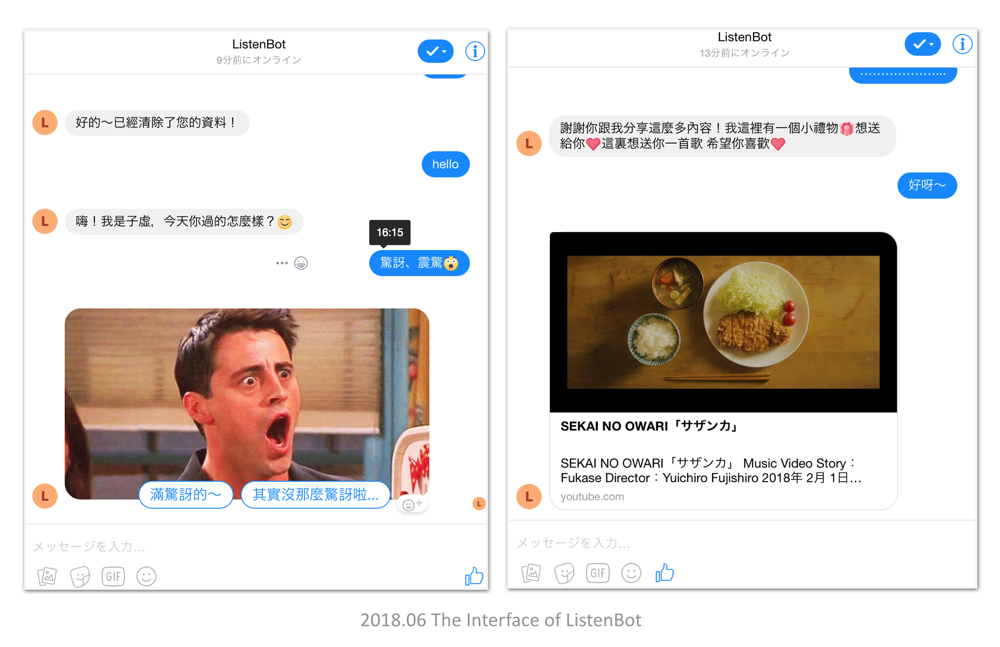

ListenBot - Emotional Therapy Chatbot
Abstract
We propose Chinese Listening Chatbot. It’s a chatbot people can talk to. We want to help people solve their emotional problems. Dialogue sequence is based on Full Catastrophe Living and SFBT(Solution-focused therapy). Make users can focus on their body, mood and thinking process. We also include pics and songs in replying contents. Hopefully, we can find some relations between these contents and users response, applying these data to future emotional analysis.
Methods
- Psychological: Catastrophe Living and SFBT(Solution-focused therapy)
- Computer Science: Back-end develop